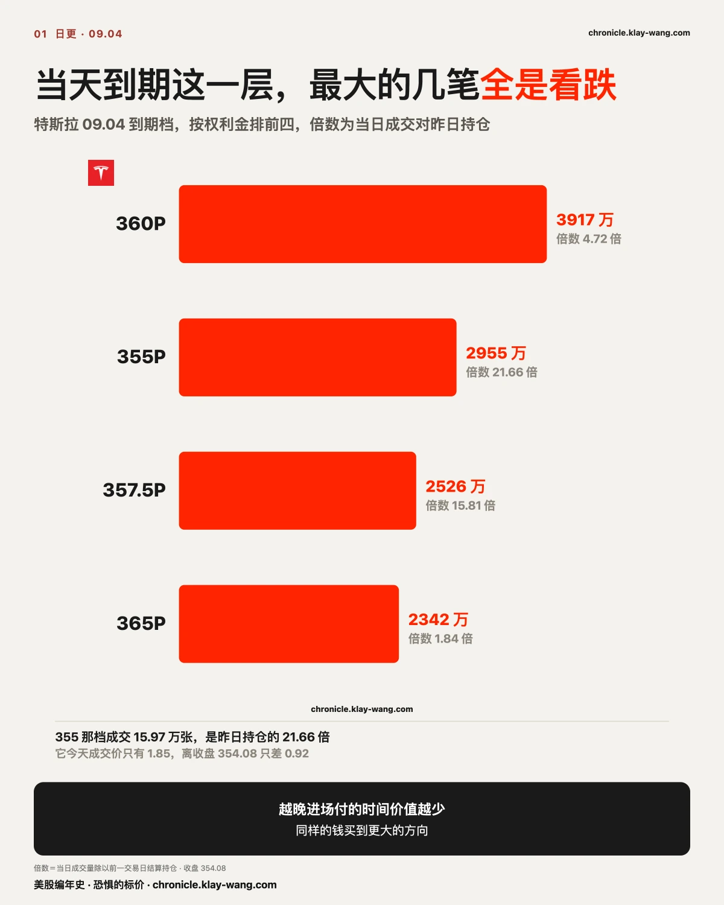
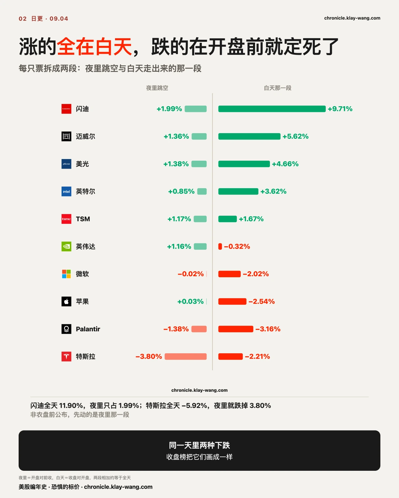
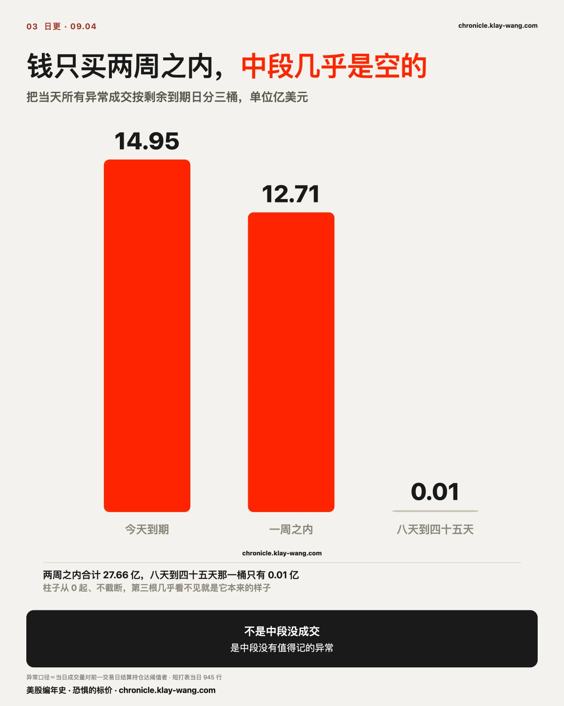
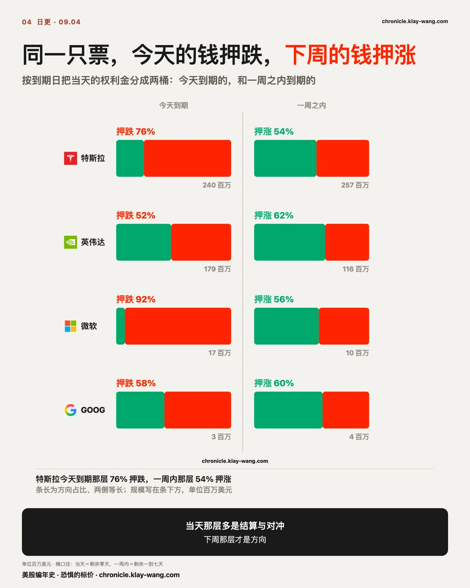
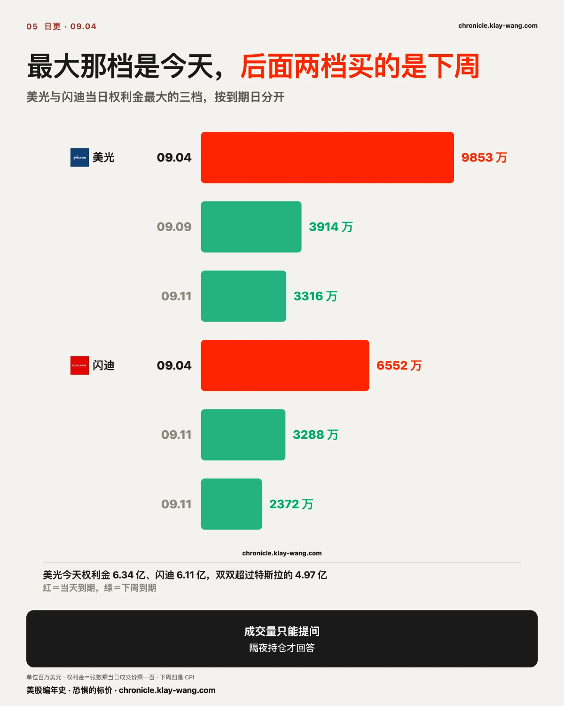
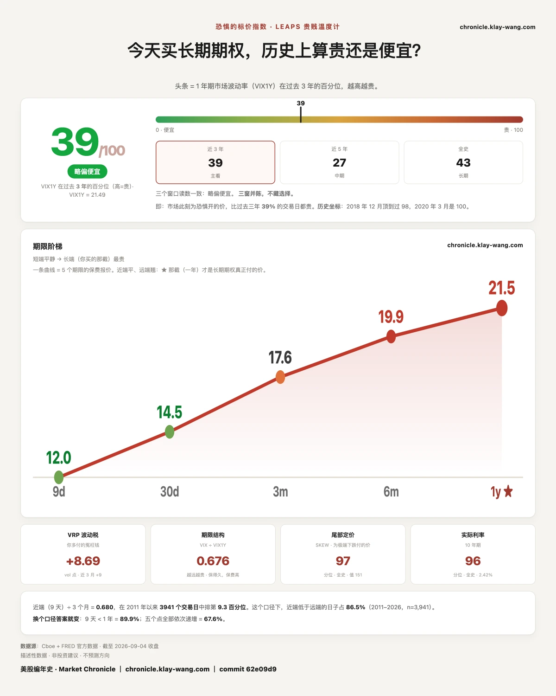

08.27 我们记下九个行权价，到期日都是 09.04。今天它收 354.08。
345、350、352.5 三档进了价内，其余六档归零。把当初付出去的钱摆进来看：345 那档每张付 1432、到期值 908；350 付 1113、值 408；352.5 付 963、值 158。三档在价内，一档没回本。
今天当天涌进来的钱，方向正好相反。09.04 到期这一层，权利金最大的五档全是看跌：
360P 成交 5.85 万张，权利金 3917 万
355P 成交 15.97 万张，是昨日持仓的 21.66 倍，权利金 2955 万
357.5P 成交 6.00 万张，倍数 15.81，权利金 2526 万
365P 成交 2.01 万张，权利金 2342 万
同一个到期日，09.02 的钱偏在上行，09.04 当天的钱压在下行，赢的是最晚进来的那一批。 中间隔了两天，进场的已经换了一批人。
这张表上能查到的只有三件事：钱押在哪边、押了多少、押在哪一天。方向对不对，到期日自己会说。
这件事值得多说两句，因为它推翻的是一个很自然的直觉。 看到 09.02 那天钱一夜之间从押跌翻成押涨、总额还翻了一倍半，最容易得出的读法是有人知道了什么。今天的结果说的是另一回事：那批钱没有比别人多知道，它只是买错了方向。
更要紧的是，赢的那一侧不是靠钱多。09.02 押涨的 1.634 亿比押跌的 9235 万多出近八千万，而今天当天进来的那几笔看跌，单笔权利金最大也才 3917 万。在到期日这一层，先来的钱和多的钱都不占便宜，占便宜的是最后一段时间里看清楚方向的钱。
原因不复杂：当天到期的合约，时间价值在开盘后一路衰减到零。越晚进场，付的时间价值越少，同样一笔钱买到的方向暴露越大。355 那档今天的成交价只有 1.85 美元，而它离收盘价 354.08 只差 0.92 美元。最后几个小时里，这一档几乎是纯方向的筹码。
这也是为什么我们从来不把成交量当成信号。倍数再大，也只说明当天有人换手，不说明谁对。要看谁对，只能等到期，或者等隔夜的持仓。

非农是盘前公布的，所以它先动的是夜里那一段。把每只票拆成夜里跳空和白天两段，画面很清楚：
闪迪全天 +11.90%，夜里 +1.99%，白天 +9.71%
迈威尔 +7.05%，夜里 +1.36%，白天 +5.62%
美光 +6.10%，夜里 +1.38%，白天 +4.66%
英特尔 +4.51%，夜里 +0.85%，白天 +3.62%
存储与芯片这一层，夜里那一下几乎不解释什么，真正的买盘是开盘之后进来的。
反过来看跌的那几只：特斯拉全天 −5.92%，夜里就跌掉 3.80%，还留下一个向下的真缺口；苹果全天 −2.51% 而夜里只有 +0.03%，微软 −2.04% 而夜里 −0.02%。
同一天里两种下跌：特斯拉的账在开盘前就结完了，苹果和微软是白天一点点卖出来的。 这两种在收盘涨跌榜上长得一样，成因完全不同。
把今天所有异常成交按剩余到期日分三桶，画面很干净：
当天到期 14.95 亿，一周之内 12.71 亿，八天到四十五天只有 0.01 亿。
中段并非没有成交，只是没有值得记的异常。钱要么买今天，要么买下周，中间那一段没人碰。

这件事本身就值得停一下。八到四十五天是最常见的持仓期限，也是财报、议息、CPI 这类事件通常被提前定价的位置。它今天几乎是空的，说明这个市场现在不做一个月后的生意，只做眼前这两周。
更有意思的是，这两桶的方向不一样。同一只票，今天到期那层和一周内那层押的是反的：
特斯拉当天 76% 押跌，一周内 54% 押涨
英伟达当天 52% 押跌，一周内 62% 押涨
微软当天 92% 押跌，一周内 56% 押涨

两层在做的本来就是两件事。 当天到期那一层，时间价值当天归零，大部分成交是结算和对冲：手里有货的人平仓，或者临到收盘补一张保护。它记录的是今天已经发生的事。一周内那一层没有这个约束，买它的人要等，等就意味着他对方向有看法。
所以读法是：当天那层告诉你今天发生了什么，下周那层告诉你有人认为接下来会发生什么。 把两层混在一起算总账，就会得出市场很分裂这种其实不存在的结论。
可推翻条件写在这里：如果下周一开盘，当天到期那层继续押跌而一周内那层转为押跌，那说明两层的分工这个读法不成立，方向是真的翻了，上面这段要重写。
09.11 是 CPI 公布日，也是两条独立信源都点名的那个真正决定 09.16 的数。
今天押在 09.11 到期这一层的钱，17 只票加起来 7.08 亿。其中 5.58 亿押涨、1.50 亿押跌，涨那侧占 79%。 逐只看：
闪迪 2.26 亿，85% 押涨
美光 1.22 亿，83% 押涨
特斯拉 1.03 亿，70% 押涨
英伟达 0.66 亿，68% 押涨
苹果 0.37 亿，98% 押涨

所有人都在说 CPI 是扳机，而买在扳机那一天到期的钱，压倒性地押它往上。
17 只里有两只不跟：Palantir 只有 37% 押涨，微软 46%。其余 15 只全部偏涨，最极端的是苹果 98%、Meta 100%。
这个比例有两种来路，指向完全不同的东西。
一种是方向性的判断，认为 CPI 会低于预期、利率压力解除。另一种更常见也更无聊：这些是备兑或价差的一条腿，买方在别处还有反向持仓，图上看到的只是露出来的那半。
分开它们的办法只有一个，等下周一早上的隔夜持仓。 如果这批看涨的持仓量真的增加了，说明是新开的方向仓；如果成交量高而持仓没动，那就是当天来回或者价差的腿。成交量只能提问，隔夜持仓才回答，这句话这一周我们已经用它对过两次账，一次对了（Palantir 五档沉淀率中位 59.4%），一次到今天还没测到。
上面那个都在押涨有一个例外，而且是很扎眼的一个。
Palantir 今天跌 4.49%。它当天到期的前三档全是看跌，175 那档成交 5.28 万张、是昨日持仓的 6.15 倍。到了 09.11 那一层，看跌 332 万对看涨 227 万，还是偏跌。全场只有它两层同向，而且都是往下。
扎眼在哪：09.02 我们记下的正是它 09.11 到期的那片看涨集群，五个价位的沉淀率中位 59.4%，新仓住下了。那批多头仓位现在还挂在账上，而今天新进来的钱压在对面。
同一只票、同一个到期日、同一批合约，两周之内两拨人站到了相反的位置。 09.11 开奖那天，这两拨人只有一拨能对。
09.11 那天，这两拨钱会在同一批合约上结清，谁对谁错由收盘价一次算完。
八月非农 16.2 万，市场预期 5.6 万，七月那个减 2.3 万还被上修成加 2.1 万。公开报道说，交易员把 9 月加息概率从五成多押到六成以上。
市场为加息做了什么准备？不用听谁说，看三个价格就够了。
一，短期国债今天几乎没动，跌 0.02%。 这是最该有反应的那一段。如果市场真觉得马上要加、而且会加得比现在想的更狠，最先被卖掉的就是它。它没被卖。
二，长期国债不但没跌，还涨了 0.17%。 一个真担心利率失控的市场，不会在非农这么强的一天去买长债。
三，给利率买保险的价钱又便宜了一天。 今天 73.10，昨天 74.68，周三还是 79.71。它现在处在近三年最便宜的那两成里。 同一天黄金跌 0.84%、白银跌 1.21%、美元涨 0.25%，风险资产那头按利率要往上在动。
三样指向同一件事：市场早就为加息做过准备了。它现在的判断是账已经算完，不需要再花钱加保护。
这不等于不会加息。 09.16 真加了，上面那句照样成立：一件早就算进价格里的事情发生，本来就不需要新的保险。会推翻它的是另一种走法：加了之后债券开始大跌、保险价钱突然跳上去。那说明这个市场之前算错了账，而我们跟着算错。
保险便宜说的是近期不会大起大落，与会不会出事是两回事。 同一天，股市里为万一崩盘付的那笔钱，贵到历史最高的百分之三里。眼前便宜，尾巴不便宜。
一，当天到期那层记录已经发生的事，下周那层才是有人对方向的看法。 把两层混着算总账，会读出一个不存在的分裂。
二，所有人都说 CPI 是扳机，而押在扳机那天到期的钱压倒性押涨。 这句有两种解释，分开它们要等隔夜持仓。
三，故事更响不等于有人付钱。 非农三倍于预期，而给利率买保险的价钱反而掉到近三年最便宜的那两成里。
恐惧的标价指数（Fear-Price Index）· 2026-09-04 · 读数 39.3/100：一年期波动率 VIX1Y 为 21.49，处于近三年第 39.3 百分位，高即贵。逐日台账与口径 → chronicle.klay-wang.com · 转载注明：恐惧的标价指数 · Market Chronicle
期限阶梯：九天 11.97、三十天 14.53、三个月 17.61、六个月 19.89、一年 21.49。九天只有一年期的 56%。 为极端下跌定的价 150.63，处在全史第 96.7 分位。
眼前便宜，尾巴不便宜。 读数走低不等于风险的价格走低。
